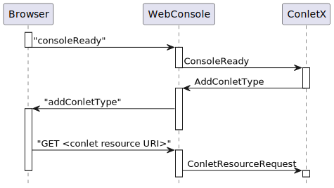

Class AddConletType
- All Implemented Interfaces:
Future<Void>,Associator,Eligible
Specifying global
resources result in the respective
<link .../> or <script ...></script> nodes
being added to the page’s <head> node.
This in turn causes the browser to issue GET requests that
(usually) refer to the web console component’s resources. These requests are
converted to ConletResourceRequests by the web console and
sent to the web console components, which must respond to the requests.
The sequence of events is shown in the diagram.

See ResourceRequest for details about the processing
of the ConletResourceRequest.
A conlet’s JavaScript may (and probably must) make use of the functions provided by the web console page. See the JavaScript documentation of these functions for details.
-
Nested Class Summary
Nested ClassesModifier and TypeClassDescriptionstatic classSpecifies an embedded instance to be added. -
Field Summary
Fields inherited from class org.jgrapes.core.internal.EventBase
completed, completionEvents -
Constructor Summary
ConstructorsConstructorDescriptionAddConletType(String conletType) Create a new event for the given web console component type. -
Method Summary
Modifier and TypeMethodDescriptionaddCss(RenderSupport renderSupport, URI uri) Add the URI of a CSS resource that is to be added to the header section of the web console page.addPageContent(String area, Map<String, String> properties) Causes a container with this conlet’s type as attribute “data-conlet-type” and classes “conlet conlet-content” to be added to the specified page area.Add a render mode to be offered to the user for creating new conlet instances.addScript(AddPageResources.ScriptResource scriptResource) Add a script resource to be requested by the browser.Return the web console component type.URI[]cssUris()Return all CSS URIs.Return the display names.Return the list of page components.Return the render modes.Return all script resources.setDisplayNames(Map<Locale, String> displayNames) Sets the names (by locale) used to display the type in the user interface.voidWrites the event as JSON notification to the given writer.Methods inherited from class org.jgrapes.webconsole.base.events.ConsoleCommand
toJsonMethods inherited from class org.jgrapes.core.Event
addCompletionEvent, associated, cancel, channels, channels, completionEvents, currentResults, defaultCriterion, forChannels, get, get, handled, handlingError, isCancelled, isDone, isEligibleFor, isStopped, processedBy, results, results, resumeHandling, setAssociated, setChannels, setRequiresResult, setResult, stop, suspendHandling, suspendHandling, tieTo, toStringMethods inherited from class org.jgrapes.core.internal.EventBase
disableTracking, enqueued, firstResultAssigned, isTracked, onCompletionMethods inherited from class java.lang.Object
clone, equals, finalize, getClass, hashCode, notify, notifyAll, wait, wait, waitMethods inherited from interface org.jgrapes.core.Associator
associated, associated, associated, associatedGet
-
Constructor Details
-
AddConletType
Create a new event for the given web console component type.- Parameters:
conletType- a unique id for the web console component type (usually the class name)
-
-
Method Details
-
conletType
Return the web console component type.- Returns:
- the web console component type
-
setDisplayNames
Sets the names (by locale) used to display the type in the user interface.- Parameters:
displayNames- the display names- Returns:
- the event for easy chaining
-
displayNames
Return the display names.- Returns:
- the displayNames
-
addRenderMode
Add a render mode to be offered to the user for creating new conlet instances.Several modes may be added. Usually only the modes
Conlet.RenderMode.PreviewandConlet.RenderMode.Viewmake sense and are the only ones supported by webconsoles. They commonly cause the conlet type to be added to a menu which is made available to the user.- Parameters:
mode- the mode- Returns:
- the event for easy chaining
-
renderModes
Return the render modes.- Returns:
- the result
-
addScript
Add a script resource to be requested by the browser.- Parameters:
scriptResource- the script resource- Returns:
- the event for easy chaining
-
addCss
Add the URI of a CSS resource that is to be added to the header section of the web console page.- Parameters:
renderSupport- the render support for mapping theuriuri- the URI- Returns:
- the event for easy chaining
-
scriptResources
Return all script resources.- Returns:
- the result
-
cssUris
Return all CSS URIs.- Returns:
- the result
-
addPageContent
Causes a container with this conlet’s type as attribute “data-conlet-type” and classes “conlet conlet-content” to be added to the specified page area.The properties are added to the container as additional “data-conlet-…” attributes and will be passed to the
AddConletRequestissued by the console when requesting the conlet’s representation.Currently, the only defined page area is “headerIcons”. When adding conlets in this area, the numeric property “priority” may be used to determine the order. The default value is 0. Conlets with the same priority are ordered by their type name.
- Parameters:
area- the area into which the component is to be addedproperties- the properties- Returns:
- the event for easy chaining
- See Also:
-
pageContent
Return the list of page components.- Returns:
- the list
-
toJson
Description copied from class:ConsoleCommandWrites the event as JSON notification to the given writer.Derived classes usually simply call
ConsoleCommand.toJson(Writer, String, Object...)with the method name and parameters.- Specified by:
toJsonin classConsoleCommand- Parameters:
writer- the writer- Throws:
IOException
-